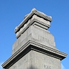
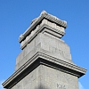

|
Nou lavait à matîn not' Cénotaphe auve eune cranne atout des piêssants jets dg'ieau. En êclyichant l'ieau finne tch'êputhe et paffe et êcliûthe, ch'est d'èrcrouaîsi bein les tuaux. Ch'est d'même qué j'arrouôsons not' saint grannit; j'gardons nos monuments nets et lithants; ainchîn nos mèrs et mémouaithes sont nettis et j'èrgriyons nos morts tchées et tchiyants. Au temps pâssé nou criyait qu'nos pouquelayes 'taient pouor les sacrifices - des pièrres d'auté: un grand prêtre attînté dé dgi griyait ses victînmes onguennées souos san couté. Si ch'est atout dé l'ieau ou bein du sang qu'nou l's arrouôse - ch'est des lèrmes ès monuments. Geraint Jennings |
 

Viyiz étout: